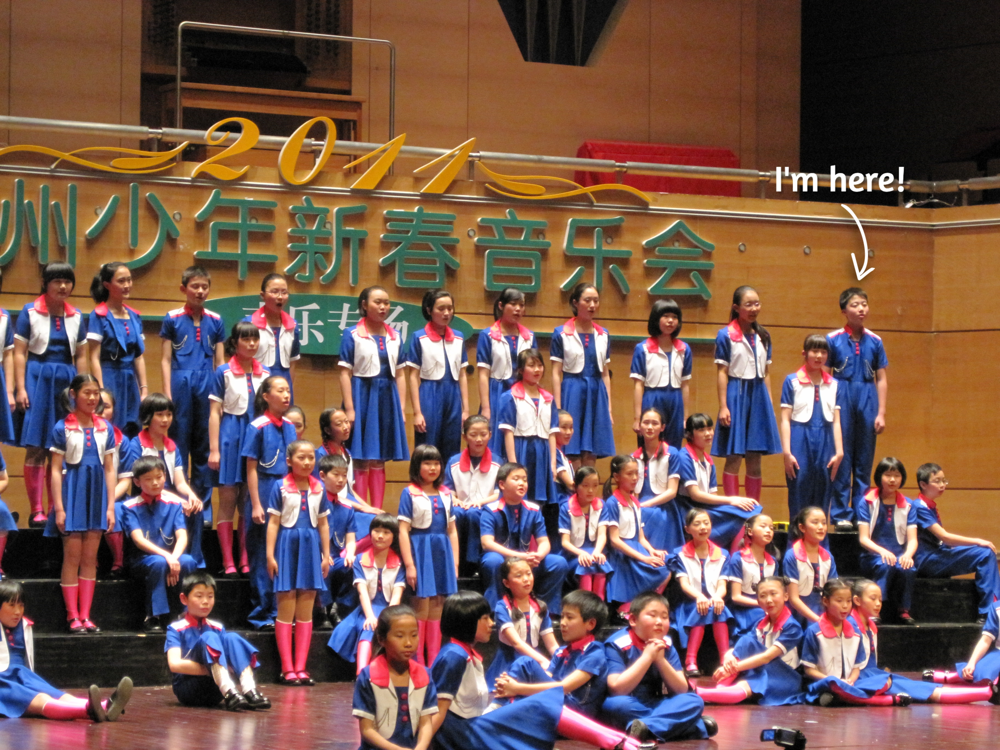
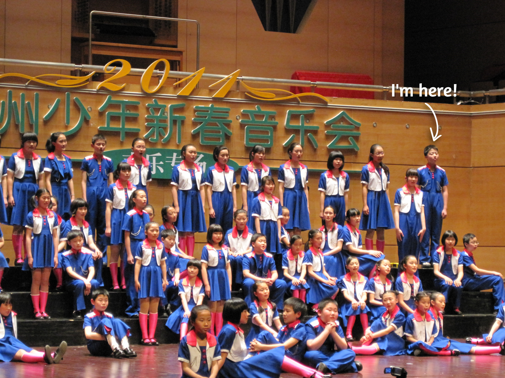

Men's Chorus, Faculty of Music | Bass Singer
YouTube | Singer
I started my YouTube channel in the summer of 2020, during the pandemic. I purchased myself an SLR camera, an AT2020 cardioid condenser mic (with shock mount & pop filter), a Scarlett 2i2 audio interface, a monitor headphone, and even several studio lights. It's a considerable investment, but come on, I'm serious about this interest!
I've done everything by myself:
演唱 Singer | Zhuoyue Lyu
製作 Producer | Zhuoyue Lyu
和聲 Background Vocal | Zhuoyue Lyu
混音 Mixing Engineer | Zhuoyue Lyu
拍攝/剪輯 Video Production | Zhuoyue Lyu
This song has received 320+ listens as of Dec. 2020. I'm grateful for all the listeners, but since the course work swamped me during the academic year, I didn't get the chance to post more. I plan to post another one or two during the Christmas break, stay tuned : )
Master of Ceremonies
Presenter | Stage & Podcast
Hangzhou Children's Chorus | Bass Singer

 

Unfortunately, since this is almost ten years ago, I barely found any recordings or videos. But I do found two pictures represent the start (2004) and the end (2011) of this journey.
The pearl of this seven-year journey is the Gold Diploma we received from the 6th World Choir Games . We ranked 4th globally, following three choirs from Europe. We ranked 1st domestically.
Singing exists beyond language -- when people sing together, they share emotion. And it is a sense of beauty shared among all cultures who equally yearned for good and happiness.
Tales of Harmonia | Bass Singer
Tales of Harmonia (ToH) is a mixed 30-voice auditioned choir that aims to provide talented musicians with the opportunity to pursue excellence in music within a friendly, focused environment. Our members range from undergraduate ArtSci and EngSci students to graduate students and recent alumni.